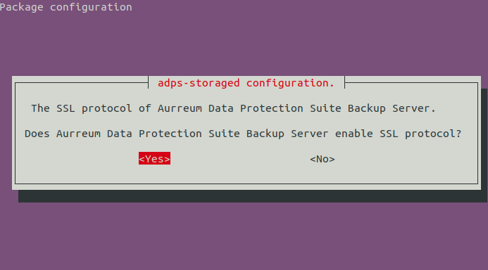
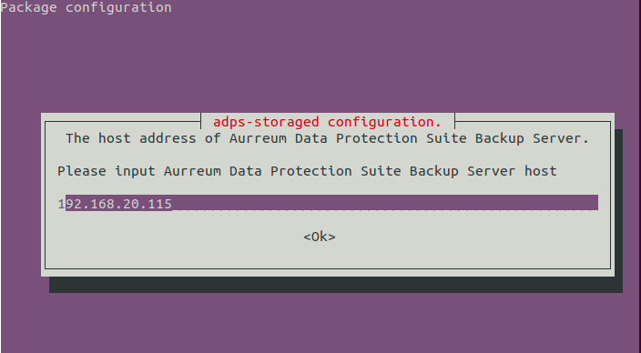

Agent Installation Guide
Contents
Agent Installation Guide#
Introduction#
This guide describes how to properly install Aurreum Data Protection Suite (ADPS) agents so that the ADPS backup server can perform unified operation and management of the agents.
Supported Environments#
Before installation, check whether the operating system and resources of the agent are supported by ADPS. Unsupported environments could result in problems such as installation failure, abnormal server startup, and unrecognized resources on the agent.
Supported Operating Systems#
Windows OS
Windows 2000/2003/2008/2012/2016/2019
Windows XP SP3/7/8/10
Linux OS
Red Hat Enterprise Linux 3.9/4/5/6/7/8
Oracle Enterprise Linux 4/5/6/7/8
CentOS 3.9/4/5/6/7/8
SUSE Linux Enterprise Server 9/10/11/12
openSUSE 10.3/11.4
Ubuntu 12.04/14.04/16.04/18.04
Debian 6.0/7.0/8.0/9.0
Unix OS
AIX 5.1/5.3/6.1/7.1
HP-UX 11.11/11.23/11.31
Solaris 9/10/11
Supported Resources#
Database
Oracle 8i/9i/10g/11g/12c/18c/19c/21c
SQL Server 2000/2005/2008/2012/2014/2016/2017/2019
MySQL 4/5/6/8
MariaDB 5.5/10.0/10.1/10.2/10.3/10.4/10.5
Percona Server for MySQL 5.5/5.6/5.7
DB2 8.1/9.1/9.5/9.7/10.1/10.5/11.1
Sybase 12.5/15.5/15.7/16.0/16.5
PostgreSQL 8.1/8.4/9.2/9.3/9.4/9.5/9.6/10/11/11.7/12.1/12.2/12.3/13/13.4/13.5/14/14.1
Informix 11.5/11.7/12.1
MongoDB 2.4/2.6/3.0/3.2/3.4/3.6/4.0/4.2/4.4/5.0
Caché 2010/2016/2017/2018
SAP HANA 1.00.112/1.00.122/2.00.030/2.00.045/20.00.056/2.00.060/2.0.062
Application
Exchange 2000/2003/2007/2010/2013/2016/2019
SharePoint 2007/2010/2013/2019
Domino 6.0/6.5/8.0/8.5/9.0
Distributed file
Hadoop (HDFS) 2.2/2.6.5/2.7.6/2.8.3/2.9/3.0.2/3.1.0
FusionInsight HD (HDFS) V100R002C50/V100R002C60/V100R002C70/V100R002C80
CDH (HDFS) 6.0/6.1/6.2/6.3
NDMP V3 V4 protocol
Virtualization platform
VMware vSphere 4.1/5.0/5.1/5.5/6.0/6.5/6.7/7.0
Object storage
AWS S3 https://aws.amazon.com/cn/s3/
Microsoft Azure (Blob storage) https://www.azure.cn/home/features/storage/
Google Cloud Storage https://cloud.google.com/storage/ss
IBM Cloud Object Storage https://www.ibm.com/cloud/object-storage
Backblaze B2 https://www.backblaze.com/b2/cloud-storage.html
Ceph object storage
Other S3 object storage services
Prepare Installation Packages#
You can contact Aurreum technical support to get ADPS software packages. The version of the ADPS agent must be the same as the version of the ADPS backup server software. Mixed-version installation and use will lead to installation failure and abnormal function. Different operating systems require different agent packages.
Windows Installation Package#
Software Package |
Function |
|---|---|
adps_version.dbg.exe |
Windows OS installation package contains the backup and restore modules for various resources including File, Oracle, Microsoft SQL Server, MySQL, DB2, Informix, PostgreSQL, MongoDB, Sybase, SharePoint, Domino, and Exchange. You can select the resources and install the corresponding modules according to your needs. |
Linux & AIX Installation Packages#
Software Package |
Function |
|---|---|
adps-common-version.dbg.architecture.suffix |
Dependent package. It should be installed on all agents. |
adps-agent-version.dbg.architecture.suffix |
Agent base package. It should be installed on all agents. |
adps-agent-file-version.dbg.architecture.suffix |
For File backup and restore |
adps-agent-bmr-version.dbg.architecture.suffix |
For Operating System backup and restore |
adps-agent-db2-version.dbg.architecture.suffix |
For DB2 database backup and restore |
adps-agent-domino-version.dbg.architecture.suffix |
For Domino application backup and restore |
adps-agent-informix-version.dbg.architecture.suffix |
For Informix database backup and restore |
adps-agent-mongodb-version.dbg.architecture.suffix |
For MongoDB database backup and restore |
adps-agent-mysql-version.dbg.architecture.suffix |
For MySQL database backup and restore |
adps-agent-oracle-version.dbg.architecture.suffix |
For Oracle database backup and restore |
adps-agent-sybase-version.dbg.architecture.suffix |
For Sybase database backup and restore |
adps-agent-mssql-version.dbg.architecture.suffix |
For Linux SQL Server database backup and restore |
adps-agent-postgres-version.dbg.architecture.suffix |
For PostgreSQL database backup and restore |
adps-agent-obs-version.dbg.architecture.suffix |
For OBS database backup and restore |
adps-agent-hadoop-version.dbg.architecture.suffix |
For Hadoop database backup and restore |
adps-agent-ndmp-version.dbg.architecture.suffix |
For NDMP database backup and restore |
adps-agent-vmware-version.dbg.architecture.suffix |
For VMware database backup and restore |
Solaris Platform Installation Packages#
Software Package |
Function |
|---|---|
adps-version-sol9-sparc64-local.gz |
Solaris OS installation package contains the backup and restore modules of various resources such as File and Oracle. You can select the resources and install the corresponding modules according to your needs. |
HP Platform Installation Packages#
Software Package |
Function |
|---|---|
adps-version-ia64.depot.gz |
HP OS installation package integrates the backup and restore modules of various resources such as File and Oracle. You can select the resources and install the corresponding modules according to your needs. |
Install Agent#
Install on Windows#
Copy the agent installation package to a drive partition with enough space.
Double-click the installation package to open the setup wizard.
Select the resource modules to be installed.
You can select the resource types to install their backup and restore modules. During installation, the database resources, files, or applications installed on the agent are selected by default. Resource types include File, Oracle, Microsoft SQL Server, MySQL, DB2, Informix, PostgreSQL, MongoDB, Sybase, SharePoint, Domino, and Exchange.

Enter the IP of the backup server, SSL encryption (optional), and Access Key (applicable to multi-tenant scenarios).

Select Destination Folder.
Wait for the installation.
After the installation, log in to the backup server as the admin. The host is on the Resource list.

Install on Linux#
Local Install#
Upload the installation package to the agent for manual installation and configuration. Run the package with root privileges in the directory where the package resides.
CentOS & Red Hat#
Install dependent packages and agent service software packages.
rpm -ivh adps-common-version.x86_64.rpm adps-agent-version_x86_64.rpm
Install resource backup and restore packages. Add the corresponding packages in the following command according to your needs. Take File resource as an example:
rpm -ivh adps-agent-file-version_x86_64.rpm
After the installation, configure the agent. Set the IP address, port, SSL protocol, and Access Key to connect to the backup server. The Access Key identifies the user who can register and activate the agent. You can log in to ADPS and see the account’s Access Key in Personal Settings -> Settings. If you leave it blank, the Access Key of the admin is used by default, which means that only the admin has the privilege to register and activate the agent. If you enter the Access Key of a specific user, then the user will also be allowed to register and activate the agent.
# /etc/init.d/adps-agent config Please input Aurreum Data Protection Suite Backup Server host[]: 192.168.18.110 Please input Aurreum Data Protection Suite Backup Server port[50305]: Does Aurreum Data Protection Suite Backup Server enable SSL protocol? [N]: Please input Aurreum Data Protection Suite Backup Server access key[]: Saving adps-agent config [OK] Do you want to restart adps-agent? [Y]: Stopping adps-agent [OK] Starting adps-agent [OK]
After the configuration, log in to the backup server as the admin. The host is on the Resource list.

Ubuntu & Debian#
Install dependent packages and agent service software packages.
dpkg -i adps-common-version_amd64.deb adps-agent-version_amd64.deb adps-agent-file-version_amd64.deb
Install resource backup and restore software packages. Add the corresponding package behind the following command according to your needs. Take file resource as an example:
dpkg -i adps-agent-file-version_amd64.deb
After the installation, configure the agent. Set the IP address, port, SSL protocol, and Access Key to connect to the backup server. The Access Key identifies the user who can register and activate the agent. You can log in to ADPS and see the account’s Access Key in Personal Settings -> Settings. If you leave it blank, the Access Key of the admin is used by default, which means that only the admin has the privilege to register and activate the agent. If you enter the Access Key of a specific user, then the user will also be allowed to register and activate the agent.
# sudo /etc/init.d/adps-agent config Please input Aurreum Data Protection Suite Backup Server host[192.168.18.110]: 192.168.18.110 Please input Aurreum Data Protection Suite Backup Server port[50305]: 50305 Does Aurreum Data Protection Suite Backup Server enable SSL protocol? [N]: Please input Aurreum Data Protection Suite Backup Server access key[]: Saving adps-agent config * Do you want to restart adps-agent? [Y]: [ ok ] Restarting adps-agent (via systemctl): adps-agent.service.
After the configuration, log in to the backup server as the admin. The host is on the Resource list.

Online Install#
Open a browser and log in to the backup server as the admin. Click Resource -> Install Agent icon. You can select the installation packages according to your needs.

Select Linux and modules. Copy an installation command.

Paste the command on the command line and press Enter to execute the installation.
[root@rhel69 ~]# cux1-o-"http://192.168.18.20:50305/d2/update/seript?modules=oracle&location=http83A82F82F192.168.18.20%3A5 0305&accesskey=22446ab0094d412£84fcc6bf3bd8fele&xm=&tool=curl" | sh
Optional Configuration#
Reconfigure Agent#
Reconfigure the ADPS Agent when the agent instance is unable to automatically detect the already-installed backup and restore modules of Oracle, Informix, Sybase, PostgreSQL, Domino, and Caché.
Execute the following commands:
Configure Oracle Home directory: /etc/init.d/adps-agent config oracle
Configure Informix Home directory: /etc/init.d/adps-agent config informix
Configure Sybase username: /etc/init.d/adps-agent config sybase
Configure PostgreSQL HOME directory: /etc/init.d/adps-agent config postgres
Configure Domino config home and Domino program home:
#/etc/init.d/adps-agent config domino
Please input Domino config home[]:/local/notesdata/
Please input Domino program home[]:/opt/ibm/domino/notes/latest/linux
Configure Caché HOME directory:
#/etc/init.d/adps-agent config cachedb
Please input InterSystems Caché home[]:/opt/cache
Configure VMware#
To back up and restore VMware, the backup host should configure VDDK. Add VDDK as follows:
tar -zxvf vddk.tar.gz -C /opt/aurreum/adps/
The unzipped directory contains the VDDK version. During the backup and restore, the VDDK version is automatically selected according to the ESXi version. You can also specify the VDDK version.
VDDK:
6.0
6.5
6.7
7.0
Configure Hadoop#
In the Linux environment, install the Hadoop runtime environment before installing the Hadoop backup agent.
Unzip the Hadoop runtime environment offline package:
sudo tar -axf hadoop-2.10.0.tar.xz
Install OpenJDK:
sudo apt-get install openjdk-11-jre-headless
Note: Fill in the JRE installation directory and version. The default directory is under /usr/lib/jvm/
Install and configure Hadoop backup agent.
Input JRE home. For example:
/usr/lib/jvm/java-11-openjdk-amd64/jre
Input Hadoop home. For example:
/home/user/hadoop-2.10.0
To reconfigure Hadoop runtime environment, enter the following command:
sudo dpkg-reconfigure adps-agent-hadoop
Install on AIX#
Install dependent packages and agent service software packages.
rpm -ivh --nodeps --ignorearch adps-common--version_pcc64.rpm adps-agent-version_pcc64.rpm adps-agent-file-version_pcc64.rpm
Install resource backup and restore packages. Add the corresponding package in the following command according to your needs. Take File resource as an example:
rpm -ivh --nodeps --ignorearch adps-agent-file-version_pcc64.rpm
After the installation, configure the agent. Set the IP address, port, SSL protocol, and Access Key to connect to the backup server. The Access Key identifies the user who can register and activate the agent. You can log in to ADPS and see the account’s Access Key in Personal Settings -> Settings. If you leave it blank, the Access Key of the admin is used by default, which means that only the admin has the privilege to register and activate the agent. If you enter the Access Key of a specific user, then the user will also be allowed to register and activate the agent.
#/etc/init.d/adps-agent config Please input Aurreum Data Protection Suite Backup Server host[]: 192.168.18.110 Please input Aurreum Data Protection Suite Backup Server port[50305]: Does Aurreum Data Protection Suite Backup Server enable SSL protocol? [N]: Please input Aurreum Data Protection Suite Backup Server access key[]: Saving adps-agent config Do you want to restart adps-agent? [Y]: Stopping adps-agent 0513-044 The adps-agent Subsystem was requested to stop. Waiting for adps-agent to stop. Starting adps-agent 0513-059 The adps-agent Subsystem has been started. Subsystem PID is 18284820.
After the configuration, log in to the backup server as the admin. The host is on the Resource list.

Install on HP-UX#
To unzip adps–version-ia64.depot.gz, execute the following command with root privileges:
sudo gunzip /tmp/adps-version-ia64.depot.gz
Install the agent and modules. For example, the absolute path of the unzipped package is /tmp/adps-version-ia64.depot. Install the Oracle module. Execute the command with root privileges as follows:
swinstall -s /tmp/adps-version-ia64.depot adps.agent-oracle
After the installation (or to change the current backup server), execute the configuration command:
sudo /sbin/init.d/adps-agent config
After the configuration, log in to the backup server as the admin. The host is on the Resource list.

Install on Solaris#
Select the corresponding installation package according to the Solaris system, bits, and resource. Take the Solaris 9 SPARC 64-bit as an example. Execute the unzip command with root privileges:
sudo gunzip adps-version-sol9-sparc64-local.gz
Execute the following installation command:
sudo pkgadd -d /tmp/adps-version-sol9-sparc64-local
Select the modules that you want to install, eg: AURREUMadps-common, AURREUMadps-agent, AURREUMadps-agent-oracle
Enter y or press Enter to the next step according to the prompts.
After the installation is completed, execute the following configuration command:
sudo /etc/init.d/adps-agent config
Follow the prompts to enter the IP address and port of the Backup Server.
Take the Oracle resource as an example. Configure Oracle Home directory:
sudo /etc/init.d/adps-agent config oracle
After the configuration, log in to the backup server as the admin. The host is on the Resource list.

Uninstall Agent#
Ubuntu & Debian#
This method is applicable to uninstall the agent on Linux with the APT package manager.
Execute the command with root privileges to uninstall a module. For example, uninstall the adps-agent-file module.
sudo apt-get purge adps-agent-file
Execute the command with root privileges to uninstall all ADPS components.
Note: This command will completely remove the software packages and the configuration files.
sudo apt-get purge adps-common
CentOS & Red Hat#
This method is applicable to uninstall the agent on Linux with the PRM package manager.
Execute the command with root privileges to uninstall a module. For example, uninstall the adps-agent-file module.
rpm -e adps-agent-file
Execute the command with root privileges to uninstall all ADPS components.
rpm -e `rpm -qa | grep adps`
HP-UX#
Execute the command with root privileges to uninstall the modules. For example, uninstall adps-agent and adps-common.
swremove adps-agent adps-common
Execute the command with root privileges to uninstall all ADPS components.
swremove adps*
Solaris#
Execute the command with root privileges to uninstall the modules. For example, uninstall AURREUMadps-agent and AURREUMadps-common.
pkgrm AURREUMadps-agent AURREUMadps-common